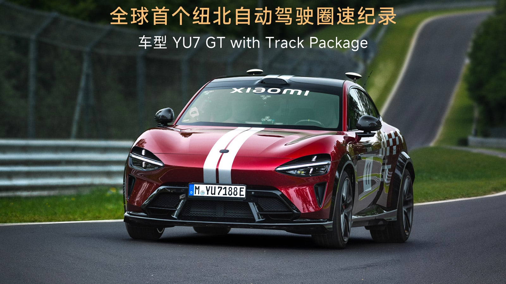

小米 YU7 GT 创全球首个纽北自动驾驶圈速纪录，官方圈速榜新增「自动驾驶」分类

2026 年 6 月 22 日，小米汽车宣布旗下 YU7 GT 以 10:29.483 的成绩完成了纽博格林北环赛道（Nürburgring Nordschleife）全球首个官方认证的自动驾驶全圈速纪录。Nürburgring 官方随之在电动车分类下新增「AUTONOMOUS DRIVING（自动驾驶）」类别——这意味着这个已有近百年历史的传奇赛道，正式为 AI 驾驶能力开辟了独立的认证体系。
这一事件的意义远超一次简单的圈速记录。当一辆重逾 2.3 吨、拥有 1003 马力的量产电动 SUV，在没有人类驾驶员的情况下，独立完成了全球公认最复杂的赛道之一的全圈行驶，这不仅是小米自动驾驶技术的里程碑，更是整个汽车行业从「辅助驾驶」迈向「自主驾驶」的关键注脚。
为什么这件事如此重要？
纽博格林北环赛道全长 20.832 公里，包含 73 个弯道、约 300 米的海拔落差，路面条件复杂多变，被车手们称为「绿色地狱」。在这条赛道上进行自动驾驶测试，与在封闭的城市测试道路或高速公路上完全不同——它考验的是感知系统在极限速度下的实时决策能力、车辆动力学控制在连续弯道中的精确度，以及整车系统在持续高负载下的可靠性。
在此之前，已有多个团队尝试过赛道自动驾驶（如 Formula E 旗下的 Roborace 系列），但那些都是专门打造的赛车，且从未获得纽北官方的正式认证。小米 YU7 GT 的这次跑圈，是纽北历史上第一次为自动驾驶车辆颁发官方认证圈速，并由公证人员全程监督计时。
值得对比的是，今年 5 月，同一台 YU7 GT 在专业赛车手 Vincent Radermecker 驾驶下，刚刚以 7:22.755 的成绩刷新了纽北 SUV 量产车圈速纪录，击败了包括奥迪 RS Q8 Performance（7:36.698）在内的一众燃油性能 SUV。自动驾驶圈速比人类驾驶慢约 3 分 7 秒——考虑到两者之间巨大的技术代差，这个差距并不令人意外，反而清晰地标示了当前的「AI 驾驶天花板」。
核心技术解析：一辆车、两个世界的性能
硬件平台：897V 高压架构 + 1003 马力
小米 YU7 GT 基于 897V 碳化硅高压平台打造，搭载 101.7 kWh 三元锂电池组。动力系统采用前置 288 kW + 后置 450 kW 的双电机四驱布局，系统综合最大功率 738 kW（约 1003 马力），0–100 km/h 加速仅需 2.92 秒，极速 300 km/h。CLTC 续航最高 705 km，快充 15 分钟可补充 570 km 续航。
完成本次自动驾驶纪录的 YU7 GT 装备了 Track Package 专业赛道套件，包含半热熔轮胎、防滚架、赛车座椅等专属配置，售价 389,900 元起（约 5.76 万美元），满配版 429,900 元。

感知与计算：700 TOPS 的"AI 驾驶员"
YU7 GT 搭载的传感器阵列包括：顶部 128 线激光雷达（探测距离 200 米）、4D 毫米波雷达、11 个高清摄像头、12 个超声波雷达。算力平台为 NVIDIA DRIVE AGX Thor-U，提供 700 TOPS 的 AI 计算能力。
软件层面，小米采用端到端自动驾驶架构，结合 XLA 大模型与 MiMo-具身基础模型。与传统的「感知-决策-控制」分模块架构不同，端到端模型直接从传感器输入映射到控制输出，能够在毫秒级时间内完成复杂的赛道驾驶决策。
据官方披露，在本次测试中，YU7 GT 在赛道大部分路段维持在 140–150 km/h 的巡航速度，在大直道上达到 210 km/h 的峰值速度，全程无人工接管、无远程干预。
行业反应：一次「被看见」的技术宣言
Nürburgring 官方的态度
Nürburgring 在公告中表示：「我们为电动车分类新增了 AUTONOMOUS DRIVING 类别。这是赛道历史的新篇章。」这一表态意味着纽北官方正在主动适应汽车行业的技术变革——传统上，纽北圈速榜只记录人类驾驶的性能，而现在是第一次为 AI 驾驶设立了独立的认证标准。
业内的观点
"The autonomous lap is a new starting point rather than an end point."
—— 小米汽车官方声明
小米自己也承认，10 分 29 秒的圈速与专业车手的 7 分 22 秒之间存在巨大差距。但在这个差距背后，是一个更根本的议题：自动驾驶在赛道上的评价标准不应与人类驾驶相同。Roborace 项目此前曾验证，自动驾驶赛车往往以更保守的走线、更高的安全余量完成圈速，这是由软件的本性决定的——AI 优化的是「成功完成」的概率，而非「最快完成」的极限。
值得关注的是，特斯拉、小鹏、蔚来等竞争对手目前都未尝试过纽北自动驾驶圈速认证。小米的这次跑圈不仅在技术上树立了标杆，更在营销上赢得了先发优势——"全球首个"的头衔具有极强的品牌溢价。
深度解读：这件事意味着什么？
1. 赛道测试将成为自动驾驶竞争的新战场
正如智能手机行业用跑分来衡量性能，汽车行业用纽北圈速来证明操控实力，未来自动驾驶能力的「赛道化认证」可能成为车企竞争的新维度。拥有官方认证的纽北自动驾驶圈速，意味着你可以在消费者心中建立"AI 驾驶技术领先"的认知。预计未来 12–18 个月内，特斯拉、小鹏等厂商将跟进这一赛道。
2. 端到端架构正在重塑行业格局
小米在这次测试中使用的端到端架构，实际上代表了中国自动驾驶技术路线的一个重要转向。此前，业界主流方案一直是基于规则的分模块架构。但端到端模型的优势在于能够从大量数据中自主学习驾驶策略——这次纽北测试积累的数据，将被用于优化 XLA 大模型，并将其能力「下放」到量产车的高速 NOA 和城市智驾系统中。
3. 时间差背后的工程故事
自动驾驶比人类慢 3 分 7 秒——这个数字看似落后，实际上是工程上的巨大成就。特斯拉的 Dojo 项目曾展示过仿真赛道训练的成果，但从未在实际纽北赛道上完成全圈无人驾驶。小米不仅在量产车上做到了，还获得了官方认证。人类驾驶的极限是克服恐惧、突破轮胎物理极限；而 AI 驾驶的极限是在保证安全的前提下持续优化走线与控制策略。这两个路径最终可能殊途同归。
4. 对消费者的实际影响
YU7 GT 的 Track Package 赛道套件搭载的悬挂系统——双阀 CDC 减振器 + 闭式双腔空气弹簧——可以实现压缩/回弹双向阻尼调节，并且后电机中集成了 eLSD 电子限滑差速器。这些硬件配置让 YU7 GT 成为一台「可以上路的赛道机器」。更重要的是，小米将赛道验证的算法逐步更新到量产车的高速领航辅助驾驶（HAD）系统中，意味着购买 YU7 GT 的车主，未来将通过 OTA 获得更强的高速自动驾驶能力。
一句话总结
小米 YU7 GT 的纽北自动驾驶圈速纪录，不是一个终点，而是一个起点——它宣告了 AI 驾驶正式进入了全球最权威赛道的认证体系，也意味着「自动驾驶能力」正在从一个营销话术，变成一项可以被度量和比较的工程指标。
当赛道计时器记录的不再是人类反应速度，而是模型推理速度时，汽车行业的竞争逻辑正在发生根本性的转变。
📎 查看原文：Xiaomi EV World's First Autonomous Driving Lap at Nürburgring →
看今日完整快报 →